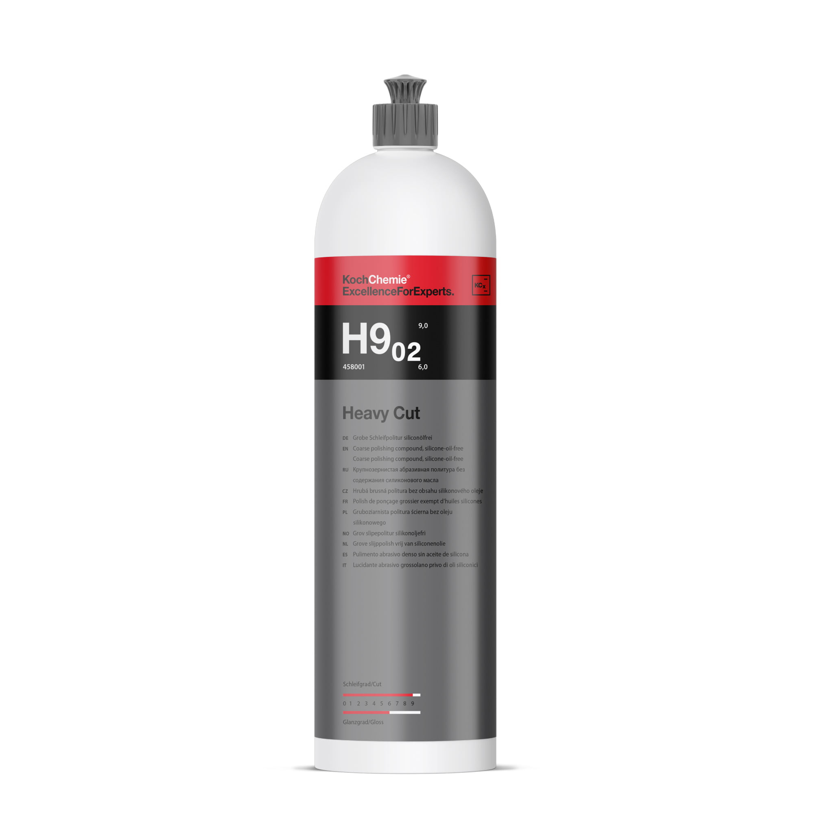
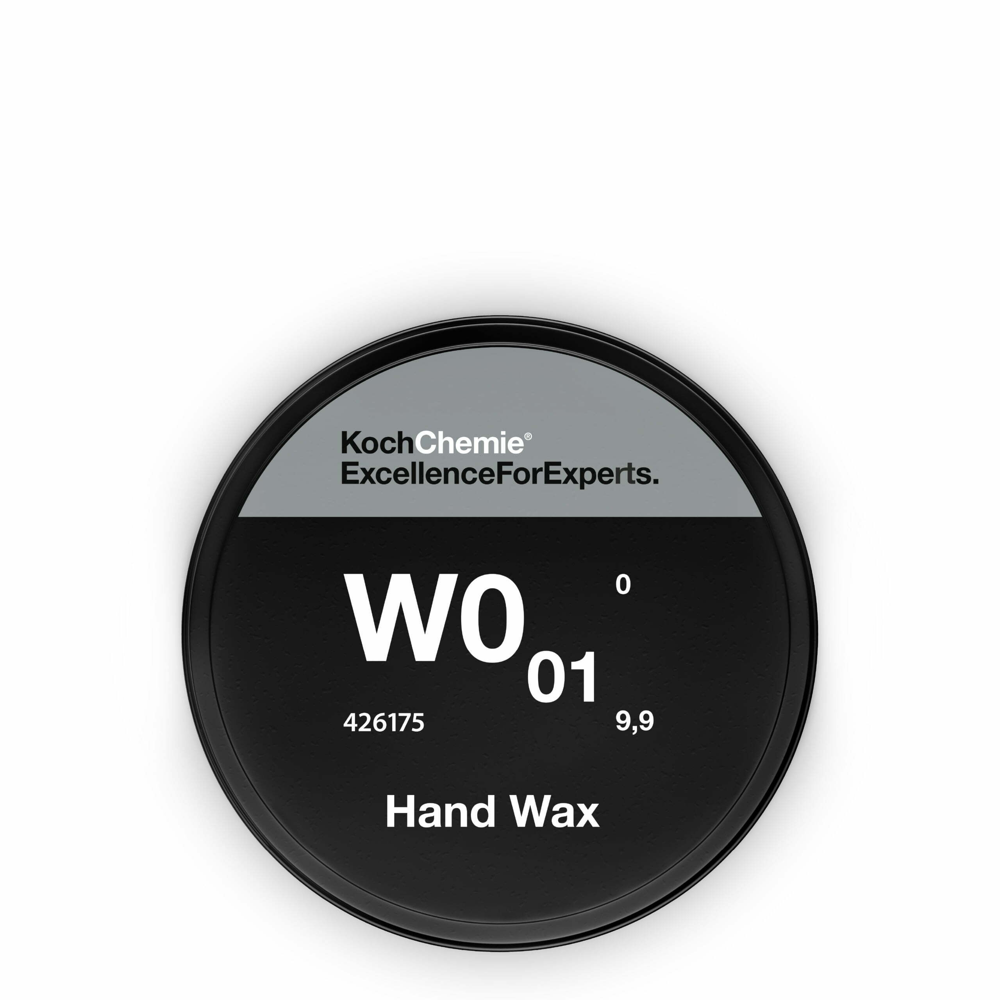
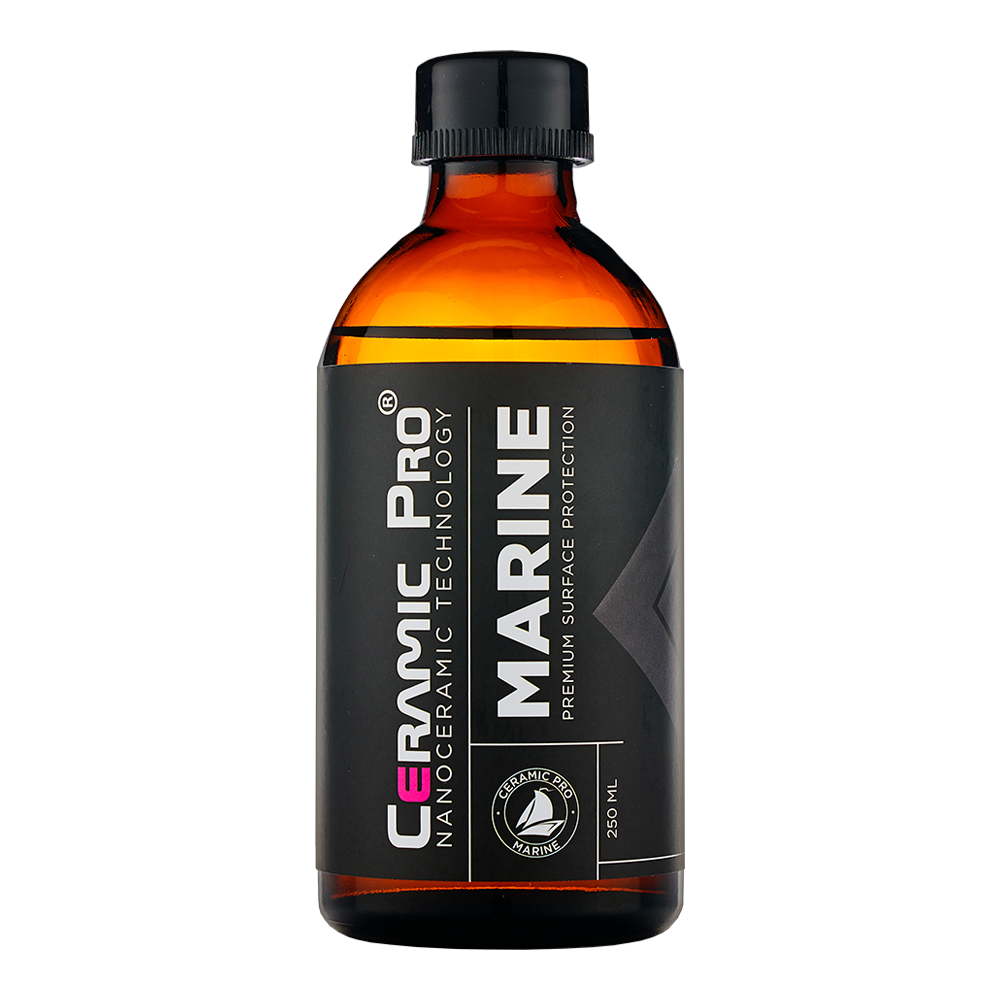
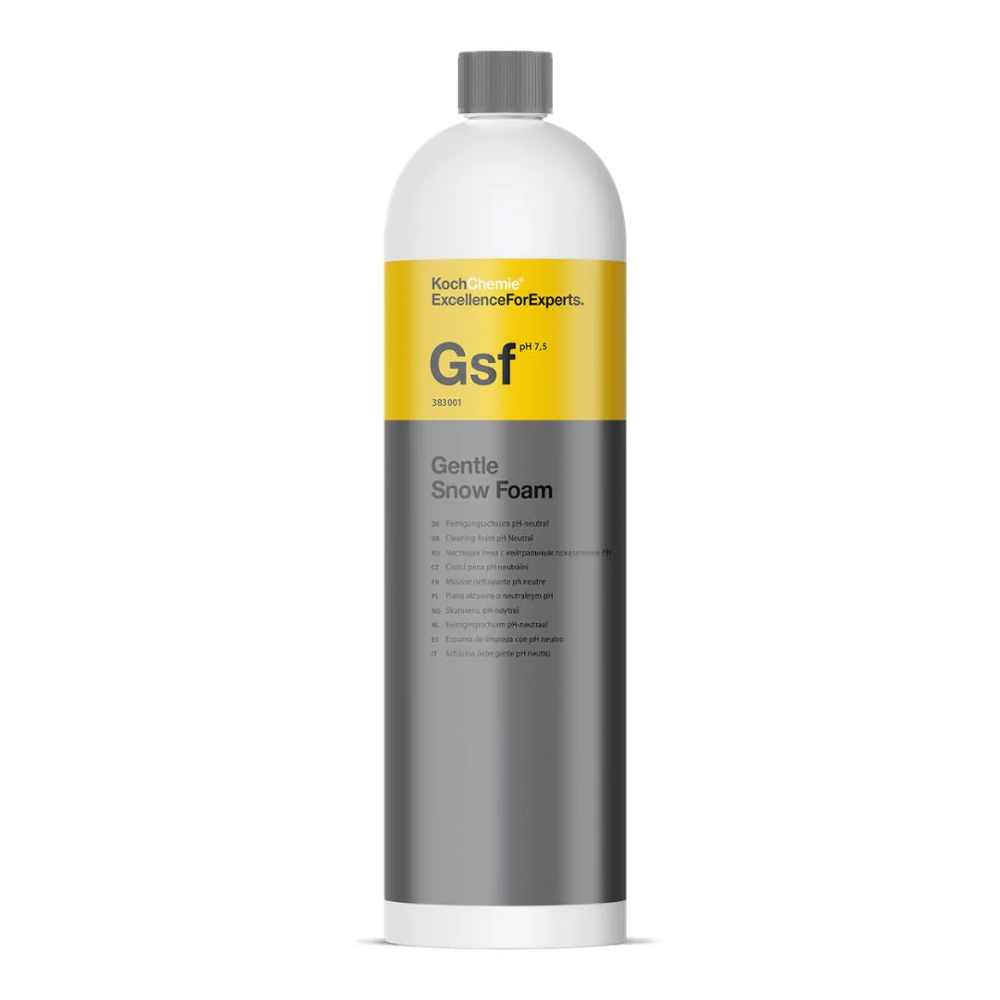
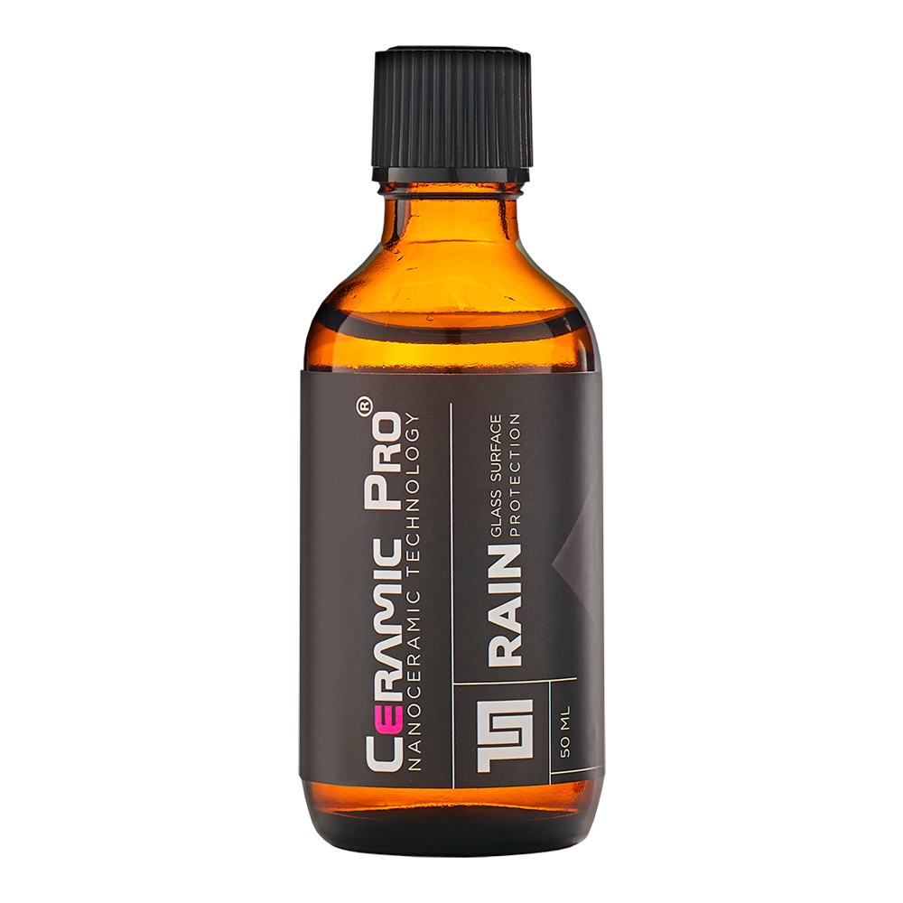

Professional-grade detailing for boats, yachts, trailer craft, and residential surfaces — We come to you.
Request a QuoteFrom trailer boats in your driveway to vessels in a marina berth, our mobile unit brings professional equipment and premium products directly to you. No hauling required.
Machine compounding and multi-stage polishing to remove oxidation, swirl marks, and surface defects — restoring depth and gloss to like-new condition.
Thorough freshwater and salt-neutralising wash downs to protect your vessel from salt, grime, and marine buildup after every outing.
Premium hand and machine wax application using Koch Chemie formulations for durable protection and a showroom-quality finish.
Removal of rust staining, water marks, and discolouration from rails, cleats, and all stainless fittings — finished to a mirror polish.
Specialist teak deck cleaning and brightening to restore colour and protect timber
As trained Ceramic Pro installers, we apply industry-leading nano-ceramic coatings for long-term protection and effortless maintenance.
Certified InstallerFull detailing for trailered vessels — launches, yachts, jet skis, fishing boats. We service your boat exactly where it sits, at home or at the marina.
No marina required. We arrive with all professional tools — and complete the job at your property.
Hull polishing on all gel coat, paint and vinyl wrapped hulls to transform your boats look.
Keep your trailer rolling longer with wheel bearing replacement, rust removal and rust protection.
Our detailing unit carries a full inventory of professional products. Marina berth, dry stack, or home driveway — the same premium result, on your schedule.
Certified to apply Ceramic Pro nano-ceramic coatings to manufacturer standard — every application backed by product warranty.
The same professional-grade nano-ceramic technology protecting your boat now applied to your home. Shower glass, windows, stone, tiles — surfaces that stay cleaner, longer.
Remove calcium deposits, limescale, and water staining from shower panels. Machine polished back to optical clarity before any coating is applied.
Ceramic Pro nano-coating creates a hydrophobic barrier — water beads and rolls off, dramatically reducing limescale buildup and cleaning effort.
Professional machine polishing for windows, balustrades, pool fencing, and any glass surface with scratches, haze, or water etching.
Ceramic Pro formulations for stone benchtops, tiles, and hard surfaces. Stain-resistant, easy-clean protection built to last years, not months.
Nano-ceramic protection for vanities, benchtops, splashbacks, and tiles — reduces staining and makes surfaces dramatically easier to maintain.
Unlike traditional sealants that degrade in months, Ceramic Pro bonds permanently at a molecular level for multi-year, low-maintenance protection.
Every job follows a methodical, product-specific process. No shortcuts. Each stage exists for a reason — and understanding why makes the difference between a good result and a lasting one.
Polishing a contaminated surface grinds grit and salt into the gelcoat, causing micro-scratches and permanent damage. Pre-cleaning is non-negotiable.
Our multi-stage polishing process is adapted to each vessel's condition, finish type, and gelcoat depth.
Preparation is the foundation. No matter how good the polish or coating, a poorly prepared surface will always limit the result.
Each wash type is selected for a specific outcome. Using the wrong wash at the wrong stage costs time and compromises results.
As certified installers, our application follows manufacturer protocol precisely — ensuring maximum bond strength and coating longevity.
We offer trailer care and light servicing to keep your setup safe, reliable, and protected from harsh marine conditions.
We work exclusively with professional-grade products trusted by detailers worldwide. No supermarket formulas — only chemistry engineered for serious, lasting results.
Professional machine compounds that cut through heavy oxidation and surface defects efficiently — safe on gelcoat and paint, with German-engineered precision.

Carnauba-enriched hand wax delivering outstanding depth, warmth, and gloss. A natural, luxurious finish that protects against UV and environmental fallout.

The global standard in professional ceramic coating. Bonds permanently to surfaces — protection harder than the gelcoat itself, with a self-cleaning hydrophobic effect.

SFR strip washes to pH-neutral maintenance shampoos — every wash selected for a specific stage of the process, from boat to trailer to residential surface.

Marine-specific formulas from Pro Care, effective and safe on most surfaces — without damage, residue, or environmental harm in sensitive coastal areas.
Formulated specifically for glass, stone, tile, and bathroom surfaces. The same nano-technology protecting your boat, now protecting your home.

We let the results speak. Here's what boat owners and homeowners say after experiencing the Boutique Care difference.
"Incredible results on my 7m trailer boat. Came to my driveway, left it looking better than the day I bought it. The ceramic coating is genuinely impressive — water just rolls straight off."
"Used them for our shower glass — years of limescale that nothing else would touch. They polished it back to crystal clear and coated it. Barely need to clean it now."
"Professional, thorough, and they know their products inside out. The teak on our launch was completely dried out — they brought it back beautifully. Stainless looks like mirrors."
Tell us about your vessel or property and what you need. We'll come back with a clear, tailored quote — usually within 24 hours.